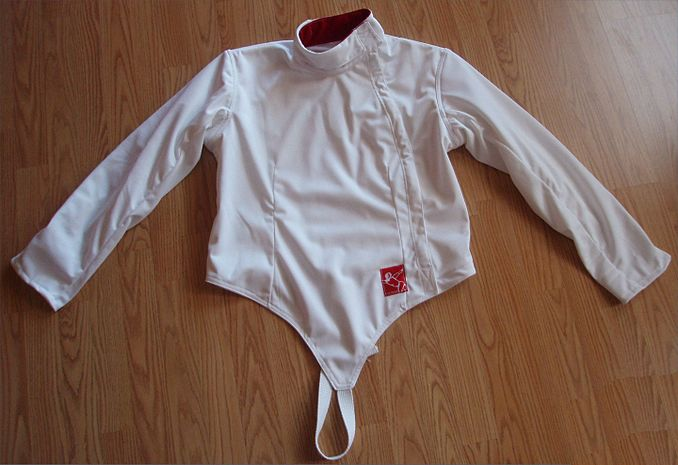
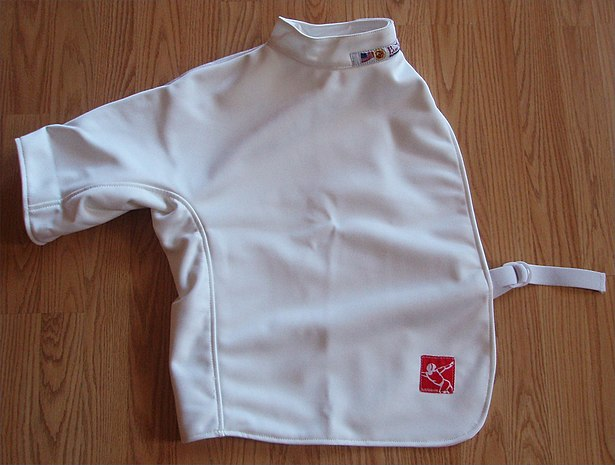
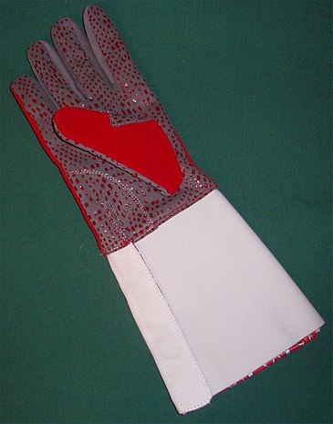
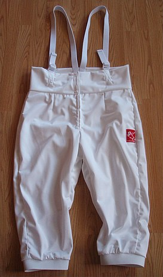
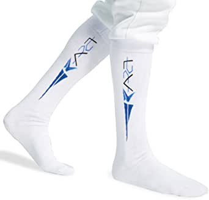
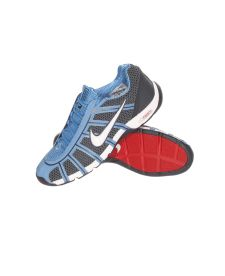
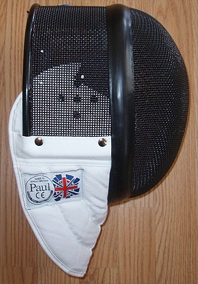
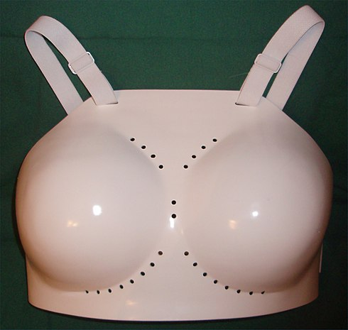
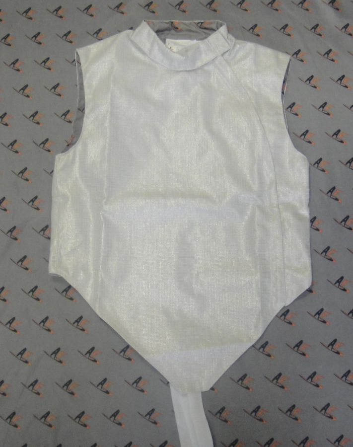

Protective Equipment
As fencing is a combat sport, protective equipment is essential in protecting fencers from serious injury or death. Most protective equipment for fencing is made of tough cotton or kevlar. Other ballistic fabrics that resist punctures were developed for use in fencing. FIE rules state that fencing wear must be able to resist a force of 800 newtons.
Components of personal protective equipment is shown in the table below
| Equipment | Description | Image |
|---|---|---|
| Jacket | The jacket is form-fitting and has a strap, croissard, that passes between the legs. A small gorget of folded fabric is sewn in around the collar to prevent an opponents blade from slipping under the mask towards the neck. |  |
| Plastron | A plastron is an underarm protector worn underneath the jacket. It provides double protection on the side of the weapon arm and upper arm. There is no seam under the arm, which would line up with the jacket seam and provide a weak spot. |  |
| Gloves | The weapon hand is protected by a glove with a gauntlet that prevents blades from going up the sleeve and causing injury. The glove also supposedly improves grip. |  |
| Breeches | Breeches or knickers are short trousers that end just below the knee. The breeches are required to have 10 cm of overlap with the jacket. Most are equipped with suspenders. |  |
| Socks | Fencing socks are long enough to cover the knee; some cover most of the thigh. |  |
| Shoes | Fencing shoes have flat soles and are reinforced in the inside for the back foot, and in the heel for the front foot. Since the forces a fencers feet endure during fencing are very high, the reinforcement prevents wear from lunging. |  |
| Mask | The fencing mask has a bib that protects the neck and a mesh that protects the face from direct attacks.The mask has very high penetration resistance on the mesh. Some modern masks have a see through visor in the front of the mask. However currently, they are banned by the FIE, following a 2009 incident in which a visor was pierced during the European Junior Championship competition. |  |
| Chest Protector | A chest protector, made of plastic, is worn by female fencers. Fencing insructors also wear them, as they are hit far more often during their training than their students. |  |
| Lamé | A lamé is a layer of electrically conductive material worn over the fencing jacket in foil and sabre fencing. The lamé covers the entire target area and makes it easier to determine whether a hit fell within the target area. In épée, the lamé is unnecessary as the target area is the whole body. |  |